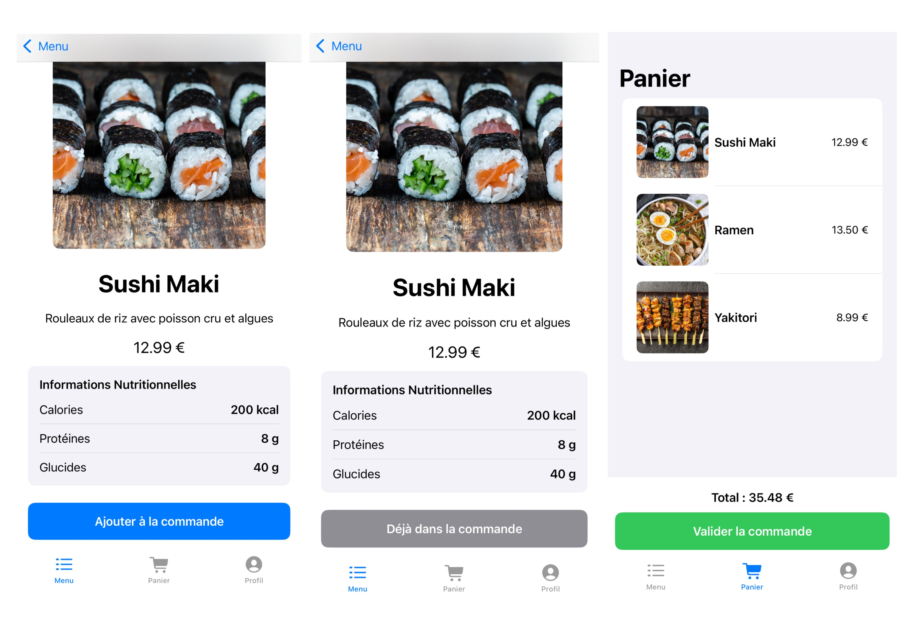
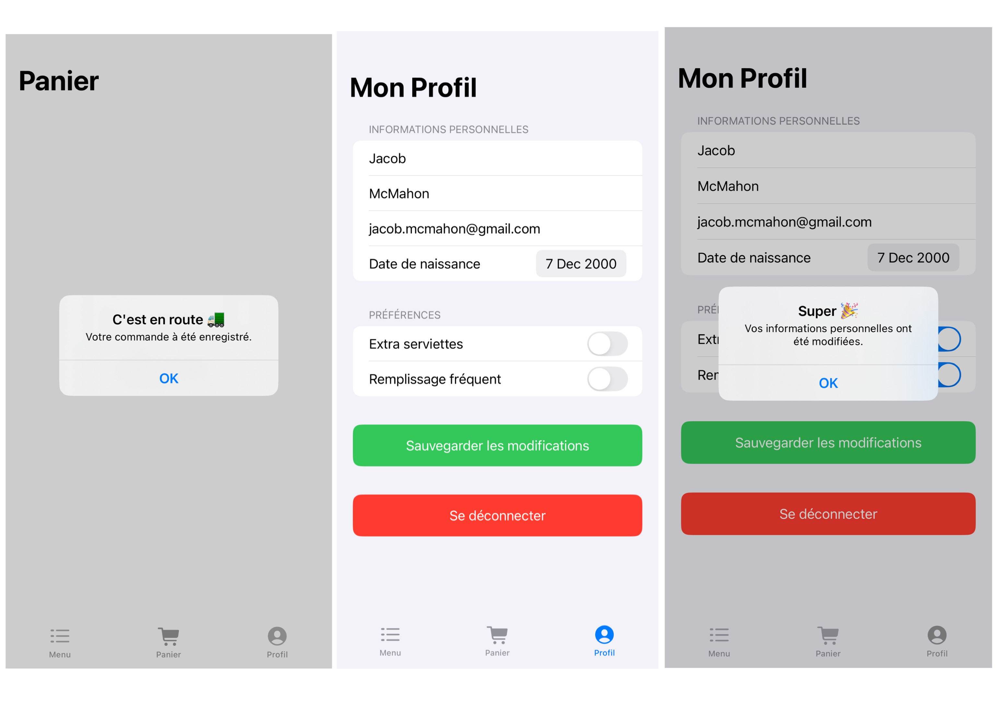
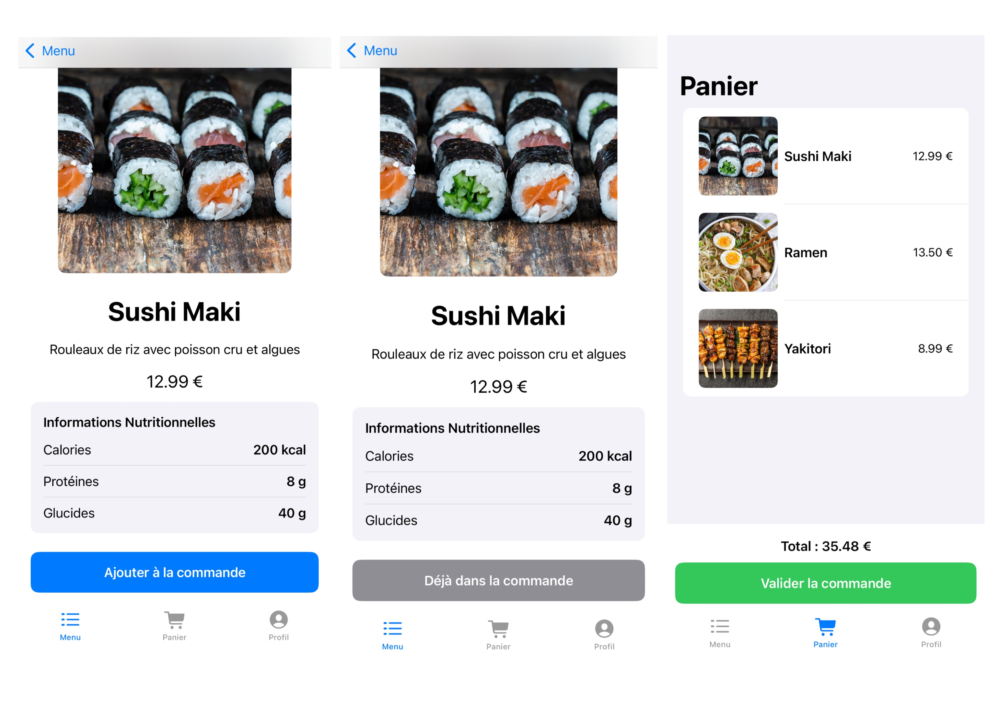
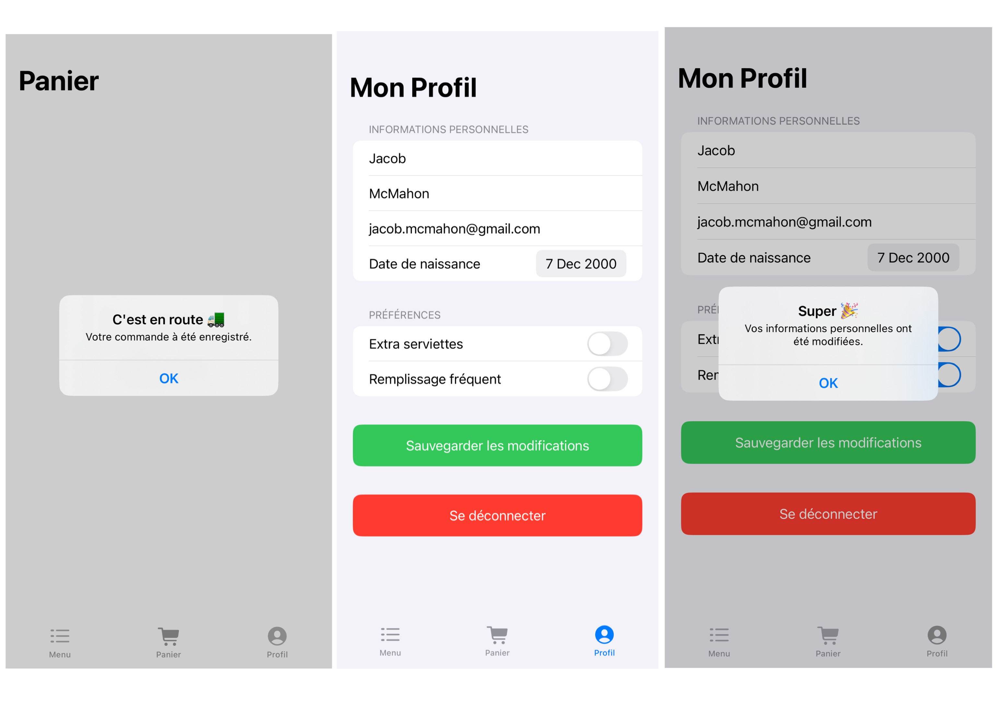

Projet iOS - Restaurant
En 3e année de BUT Informatique
Ce projet est une application iOS développée avec SwiftUI. Elle permet aux utilisateurs de créer et gérer leur compte client de manière sécurisée. Grâce à l’intégration d’une API Node.js, l’application récupère dynamiquement les données relatives aux menus proposés par le restaurant.
Les utilisateurs peuvent ainsi parcourir les différents plats disponibles, consulter les descriptions et les prix, puis sélectionner les articles qu’ils souhaitent commander. Une fois leur panier validé, les informations sont transmises à l’API pour assurer la gestion des commandes.
 



API
L’API Node.js joue un rôle central dans le fonctionnement de l’application en assurant la gestion des données et des interactions serveur. Elle permet notamment de gérer les comptes clients, de récupérer dynamiquement les menus du restaurant et de traiter les commandes.
Conçue avec des endpoints, cette API garantit une communication rapide et fiable entre l’application iOS et la base de données, assurant ainsi une expérience utilisateur fluide et sans interruption.
Exemple de données retourné par l'API


Outils utilisés
- Langages : SwiftUI, JavaScript, SQL
- API : Node.js
- Outil : Xcode
- Base de données : MySQL